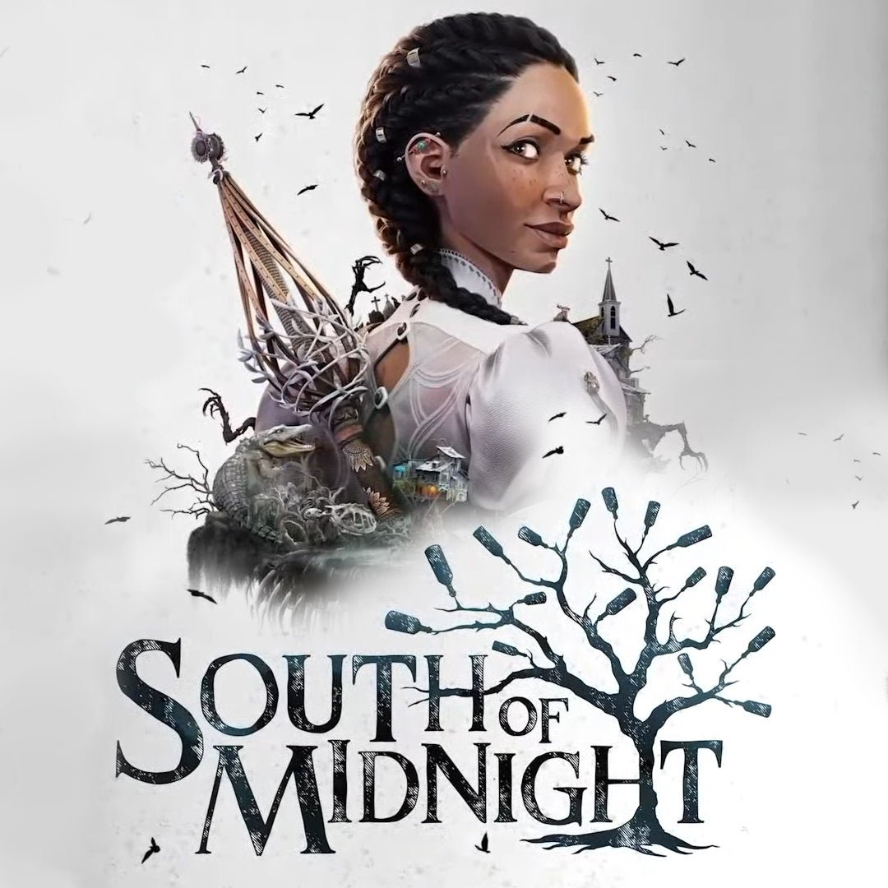
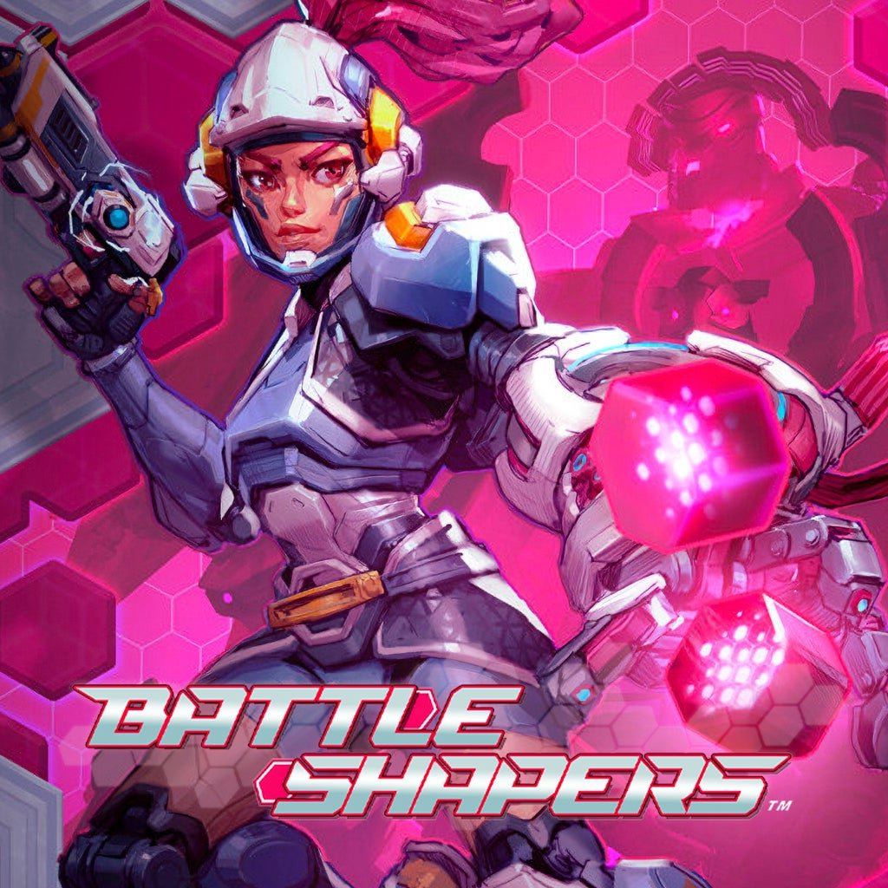
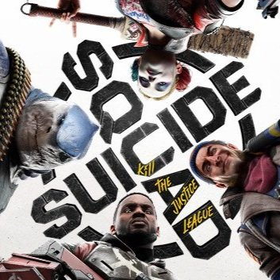
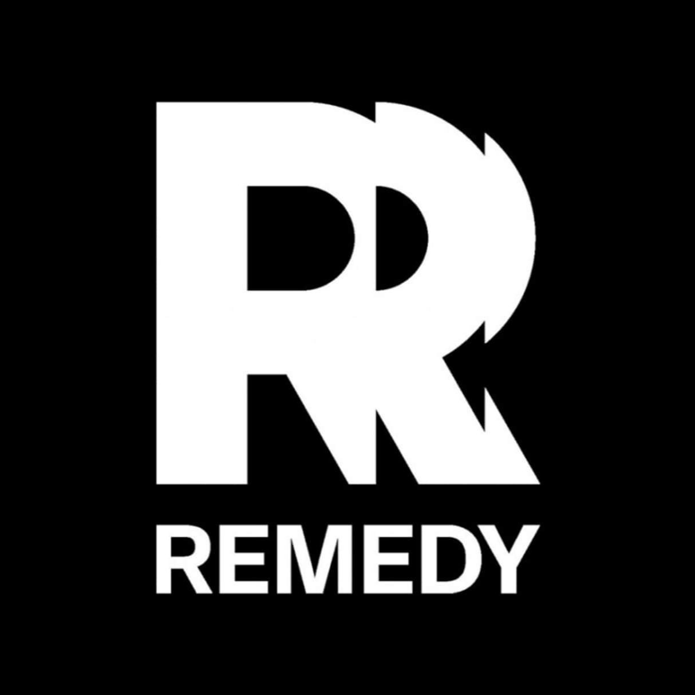
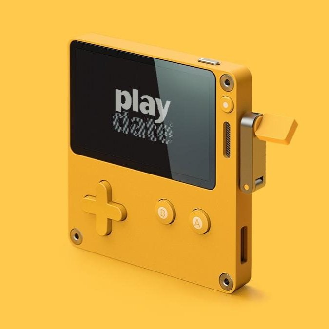
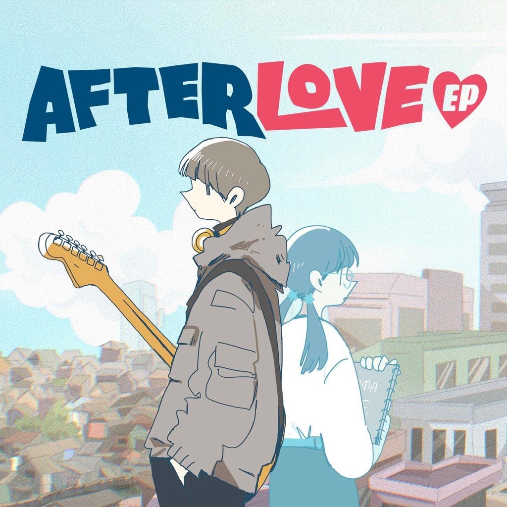
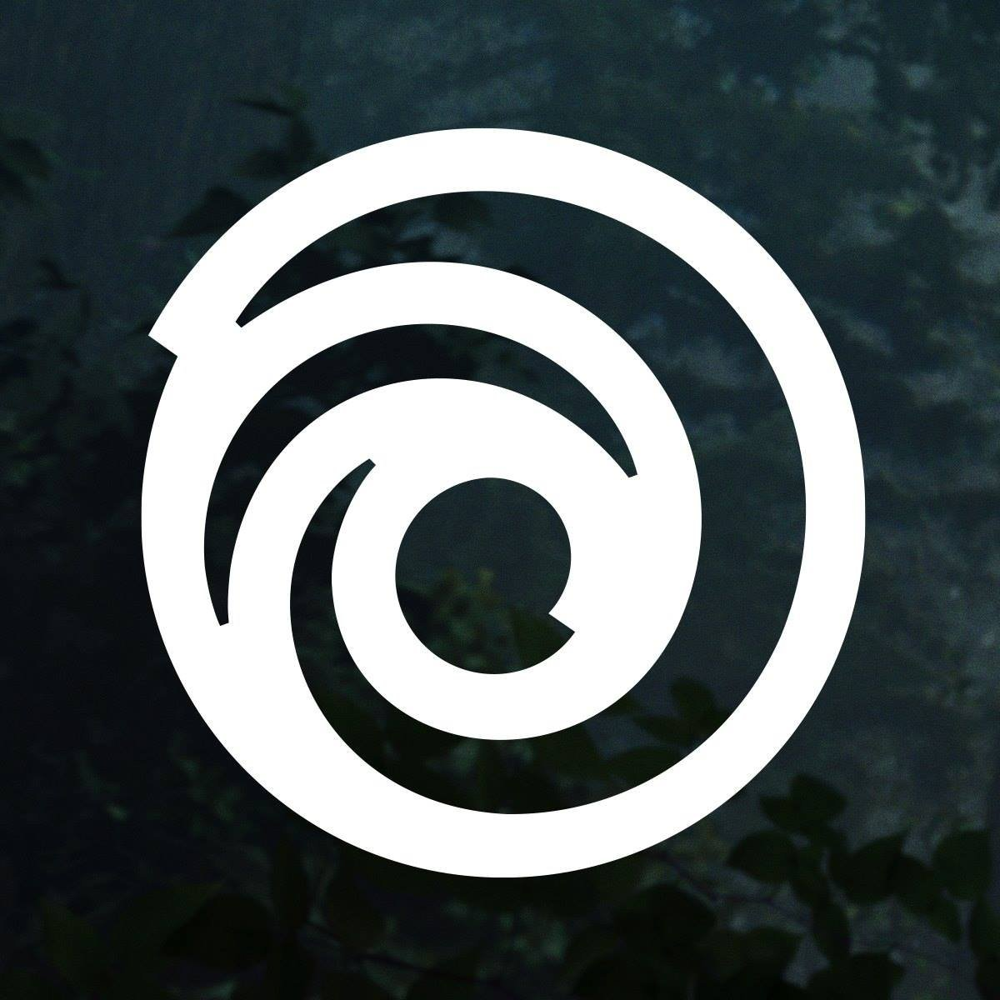

Role: Writer, Narrative Designer, Artist, Team Lead
I worked with the team at Sweet Baby Inc. for several years — first as a contract creative, and later as a full-time writer, designer, and artist.
My day-to-day work spanned a wide range of narrative and design responsibilities across both AAA and indie games. I wrote scripts, dialogue barks and banter, character bios, and detailed world-building documentation, while also producing storyboards, animatics, and design materials for internal narrative tools.
Alongside the creative work, I helped support the studio's broader production pipeline — managing internal and external writing talent, running writers' rooms, providing feedback on dialogue and tone, and keeping projects moving by wrangling scripts, maintaining documentation, and navigating production calendars and client deliverables.
I also contributed design and illustration work for Sweet Baby itself, including web design and art direction during studio rebranding efforts.







A handful of the studios I had the privilege of working with at Sweet Baby.
Selected Credits